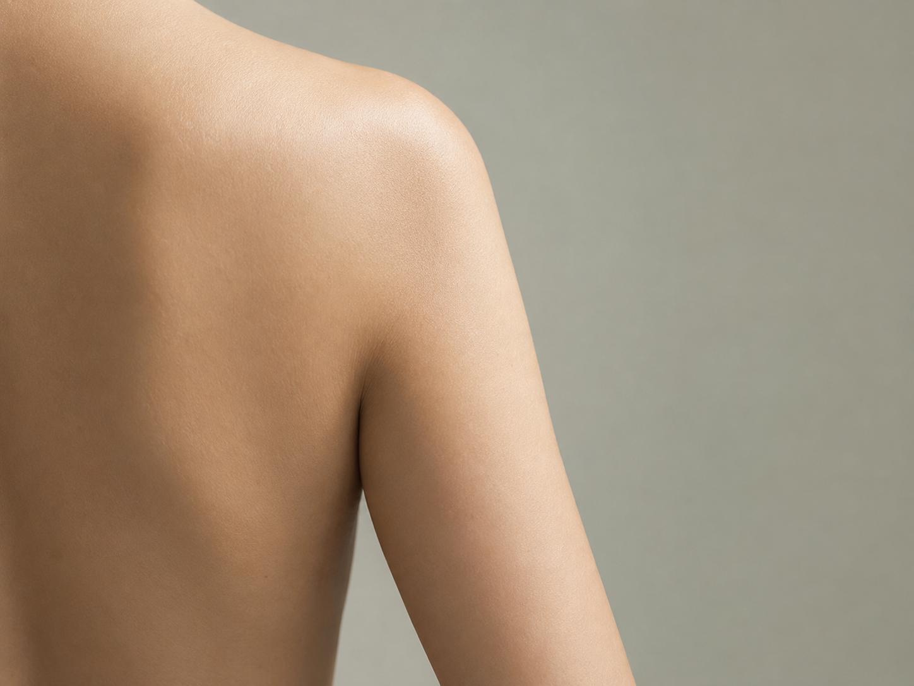

前撮り1ヶ月前。二の腕が太いままでも間に合いますか？
「前撮りまであと1ヶ月なのに、二の腕が太いまま…」 ドレスを試着した瞬間、そう感じて不安になるプレ花嫁さんはとても多いです。
結論から言うと、1ヶ月あれば“細く見せる状態”までは十分に整えられます。 大事なのは、体重を落とすことではなく「むくみ」「姿勢」「食事」の3点です。

「食事を減らしているのに、二の腕だけ変わらない…」

それ、あなたの努力が足りないわけではありません。
プレ花嫁の二の腕が痩せにくい理由
二の腕は、体重の増減よりも
むくみ・姿勢・筋肉の使われ方が見た目に直結する部位です。
ドレスを着たときに「二の腕が太い原因」は、脂肪よりもむくみや姿勢による影響が大きいケースがほとんど。
よくあるNGアプローチ
- 食事量を急に減らす
- 直前だけ二の腕トレーニング
- 体重だけを指標にする
これらは一時的に数字を動かしても、
ドレスで見える「線」を崩してしまうことがあります。
ドレスで細く見せるために必要な考え方
花嫁の二の腕は、
「細さ」よりラインと立体感が大切です。
整えるポイント
- むくみを溜めない食事リズム
- 血流と姿勢を邪魔しない体の使い方
- 体重を落としすぎない判断
今日からできる！
「二の腕痩せ」3ステップ
脂肪を落とすより、まずは「正しい位置」に戻す方が早いです。
肩の位置を「後ろ」に引く
鏡を見て、肩が耳より前に出ていませんか？（巻き肩）
肩が前にあるだけで、二の腕は本来より1.5倍太く見えます。
巻き肩ケアで肩を正しい位置に戻すだけで、二の腕はスッキリします。
タンパク質で「たるみ」を防ぐ
食事制限でタンパク質が不足すると、筋肉が落ちて皮膚がたるみ、いわゆる「振袖肉」になります。
毎食、手のひら一枚分のお肉やお魚を食べて、ハリのある二の腕を作りましょう。
脇の下を「流す」
二の腕の付け根（脇の下）は、老廃物のゴミ箱です。
ここが詰まっていると、いくらマッサージしても流れません。
お風呂上がりに脇の下を軽く揉みほぐして、老廃物の通り道を作ってあげましょう。
よくある質問
Q. 二の腕だけ痩せないのはなぜ？Click!
A. 脂肪ではなく、むくみや姿勢の影響が大きい部位だからです。
Q. 食事を減らせば細くなりますか？Click!
A. 一時的に体重は落ちますが、ラインは崩れやすくなります。
Q. いつから整えれば間に合いますか？Click!
A. 3ヶ月前が理想ですが、1ヶ月前からでも見え方は変えられます。
もし二の腕だけでなく、背中のラインや むくみも気になる場合は、 合わせて整えるとドレス姿が一気に変わります。
他の部位も整えたいですか？
ドレス姿を美しくするのは、一箇所だけではありません。
気になる部位を合わせてチェックしてみてください。
セルフケアで限界を感じたら
二の腕の脂肪は「冷えて固まっている」ことが多く、自力で落とすのに最も時間がかかる部位です。
式まで時間がない場合は、痩身エステのキャビテーション等で物理的に脂肪を砕くのが一番早いです。
栄養士が厳選した
「二の腕・背中痩せ」に強いエステ特集
「部分的に直す」より、 花嫁としての全体バランスを整えたい方へ。
無料の花嫁ダイエット序章を読む